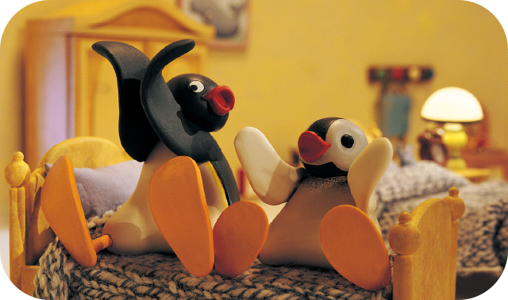

Pingu is delighted when he receives a valentine card from Pingi – but he finds making one for her is a messy business! The glue gets everywhere, and if the card isn’t stuck to Pingu’s flipper or Mother’s newspaper, then its glued shut! Pingu gives up, until Pinga gives him an idea for a unique and glue-free card! Pingu goes over to Pingi’s, and she is delighted with her Valentine.
Episode 2
Pinga's Sleepwalks
Pingu is trying to sleep but Pinga is snoring. He tries everything to put a stop to the noise until Pinga suddenly gets up and sleepwalks out of the igloo. Oh no! Pingu has to follow Pinga and keep her out of trouble as she rambles through people’s homes and washing lines, around sharp icicles and over a ravine on her night time moonwalk…
Episode 3
Bouncy Fun
Pingu is bouncing on everything in the igloo, from his bed to the armchairs and even Pinga’s favourite toy. Mother tells him to calm down, and goes out with Pinga, leaving Father to help Pingu tidy up. Father knows that it can be fun to bounce, so he and Pingu decide to build a trampoline. But Pingu soon realises that he is going to need a crash helmet!
Episode 4
Pinga's Lost Rabbit
Pingu and Pinga are arguing in the igloo over their toys. When Pingu puts Pinga’s favourite toy rabbit up out of her reach on the windowsill, it tumbles out of the window. Forced to go and fetch the rabbit, Pingu kicks it back towards the igloo – but it lands on his sled and slides away. Pingu goes on a frantic hunt for the lost Rabbit and finally returns it to find that Pinga has transferred her affections to another toy!
Episode 5
Windy Day
It’s a very windy day and to stop Pingu and Pinga playing with the laundry basket, Mother has asked them to hang out the washing. But the wind is more than they had bargained for and when the towels get caught by a big gust, Pingu and Pinga give chase. When they return, they are too exhausted to play with Father and his kite!
Episode 6
Pingu wants to Fly
Seeing a seagull in flight makes Pingu want to fly, so he and Robby try some ingenious ways of getting Pingu off the ground – jumping, catapulting, and gliding. None are successful until a balloon seller supplies Pingu with some helium balloons. Suddenly it’s up, up and away! But Pingu realises that being 'grounded' is actually the best way for a penguin to be…
Episode 7
Pingu Digs a Hole
When Father uses a shovel to get the snow off his snowcart, Pingu decides to try out a bit of digging for himself. Soon he and Robby are tunnelling around the neighbourhood and things start sinking into the snow in their wake! Pingu and Robby find themselves in trouble when the Fishmonger loses a crate of his fish and Mother and Father’s picnic disappears below ground!
Episode 8
Pingu Finishes the Job
Father is trying to make a table but is spending most of his time keeping Pingu out of his toolbox. When Pingu is left alone in the shed, he can’t resist trying a bit of DIY himself - but his efforts only make the table collapse! With Father and Grandfather’s help, Pingu gets the legs back on - but the table is looking a bit wobbly…
Episode 9
Robby the Snowboarder
When Pingu goes snowboarding with Robby, he wishes he was as good at jumps as his friend is. They meet Pingi who is even better than Robby, but she is happy to teach Pingu how to get better while Robby just teases him. But Robby soon learns that he shouldn’t be so cocky when he shows off and gets a very sore bum!
Episode 10
Pingu's Moon Adventure
When Pingu’s Grandfather tells him all about the moon, Pingu desperately wants to visit. With Pinga’s help, Pingu makes a rocket out of an old barrel, some tin foil and snow. But when they pretend that the rocket has landed on the moon, they are shocked to see an alien face at the window - until they realize that it’s only Grandfather joining in!
Episode 11
Pingu and Pinga go Camping
Pingu and Pinga put up a tent and Mother allows them to sleep in it overnight. Pingu insists that brave explorers don’t need to bring their cuddly toys camping with them. But Pinga insists on bringing her bunny. So Pingu scares Pinga by making her think that the bunny is growling. She is so frightened that she throws bunny out of the tent. Pingu gets his comeuppance though when he mistakes the silhouette of Robby eating their food for a giant, ferocious rabbit!
Episode 12
Pingu has the Hiccups
Pingu is trying to read his book in peace, but Pinga develops the hiccups, and he just can’t concentrate! He takes her to the Post Office to see if Father can cure her, but none of the tricks Father knows – hand-stands, being shaken upside-down, blowing into a paper bag – have the right effect. So Pingu decides to scare her by putting on a pair of icicle fangs - but the only person he scares is himself! Luckily this makes Pinga laugh until her hiccups are cured.
Episode 13
Like Father Like Pingu
Father decides to take Pingu out on a fishing expedition. But Pingu is frustrated when Father won’t let him cut a hole in the ice – even though Pingu feels that he could do a better job! When Pingu gets some big bites, Father takes over and firstly lets the fish escape, then later takes all the credit for landing a fish that Pingu had hooked. But in the end, Father accepts that Pingu sometimes knows best, and lets his son navigate on the journey home, and gives Pingu all the credit for the biggest fish!
Episode 14
Pingu's Ice Sculptures
Everyone except Pingu seems to be entering the local Ice Sculpture Contest. Pingu wants to play instead, and tries to distract Robby from his masterpiece by throwing snowballs. When a snowball hits the sculpture and makes it look bug-eyed, Pingu and Robby start to compete, making more and more freaky shapes. Soon they’re working together on the weirdest sculpture of all, and eventually beat Father and Pinga to take first prize in the contest!
Episode 15
Pinga's Balloon
Pinga wants to play with her new balloon - but it needs inflating first. Pingu and Father find that blowing up this particular balloon will be harder than they’d ever thought possible! Simply blowing won’t do it, nor will a bicycle pump, and Pinga’s getting impatient! Pingu gets an idea when he sees mother using bellows to stoke the stove. He puts the balloon over the bellows’ nozzle, and he and Father bounce Pinga up and down on the bellows as the balloon inflates perfectly!
Episode 16
Pingu and the Band
Pingu and Pinga are driving Mother crazy with their incessant banging - they’ll use any surface as a drum! When she sends them out, they try to interest Father in their penguin percussion - but the Post Office is no place for such a racket, so he sends them to Grandfather. When Grandfather inspires Pingu to make real music with icicles and a fish skeleton, Mother and Father realise what talented kids they have!
Episode 17
Pingu and the Knitting Machine
Mother’s new knitting machine fascinates Pingu - but he isn’t allowed to help as much as he’d like. He helps Mother put up a sign and attract customers for woolly scarves and mittens, but he really wants to get his flippers on the knitting machine. When Mother takes a rest from her work, he seizes his chance to knit up a storm!

Episode 18
Pingu's Bedtime Shadow
It's bedtime but Pingu and Pinga are still outside playing. Mother and Father eventually get them into bed but Pingu and Pinga continue to play - making crazy shadows on their bedroom wall: a walrus, a ship and even Father! But when Mother tells Father to go in and settle them down, he finds it hard to resist joining in...
Episode 19
Pingu Plays Tag
Pingu is enjoying a game of Tag with Pinga and he is determined to avoid being ‘it’ at all costs, hiding from Pinga on top of the wardrobe and even diving under the ironing board to escape her! Mother and Father send them outside to play, but Pingu runs a long way off, giving Pinga the slip by climbing up an ice arch. But getting down again is another matter…
Episode 20
Pingu's Stick Up
Pingu and Pinga find some stickers in their cereal box, and begin to label things. But when Pingu claims Pinga’s favourite toy, Pinga gets revenge by labelling everything in the igloo as hers! Things soon get out of hand when their labelling spree goes beyond the igloo, and soon they are both claiming Mother! But when they come to a playground where Pinga claims the swing and Pingu claims the seesaw, they realise that they have more fun when they share and playing together.
Episode 21
Pingu and the Doorbell
Pingu knows that he’s in trouble when he breaks the igloo’s doorbell. Dashing to the Doorbell Shop, he is delighted to find a new hi-tech bell, and replaces the broken one with this new model. Pingu can’t wait for his family to hear the new doorbell’s funky tones, but when he rings it, they are confused by the crazy jingle they hear. When Grandfather visits and also rings the bell, Father can no longer stand the noise and decides to find out what Pingu did with the trusty old bell…
Episode 22
Pingu's Balancing Act
Robby is extremely good at balancing a fish on the end of his nose, and Pingu is keen to have a go too, but he just can’t manage it. Mother soon gives him a big coloured ball to stop him practicing with anything he can get his flippers on. Robby is still showing off his skills outside, and laughs at Pingu’s efforts to balance the ball. But when Robby flicks his fish on top of the shed and Pingu climbs on top of his big ball to reach it, he finds that he can balance on the ball. Everyone is extremely impressed.
Episode 23
Pingu Gets Lost
Pingu is hurrying home with a bottle of milk for his sister when he drops it and it rolls into an icy ravine. He follows it and gets lost in an ice maze. Luckily for Pingu, his bright red scarf gets caught on an icicle at the entrance and unravels as he walks round the maze - providing an ideal method to find his way out…
Episode 24
Pingu's Pancakes
Pingu and Pinga ask Mother if they can help her make pancakes, but soon they are all dodging flying batter as Pingu tries to learn how to flip them properly. He is too excited to take Mother’s advice to mix the batter gently and to toss the pan carefully. Pancakes stick to the ceiling, the walls, to Pinga and even Father gets one in the face! But Pingu eventually learns to flip properly, and serves up a pancake feast for all the family!
Episode 25
Stinky Pingu
Mother serves fish porridge for dinner - and Pingu does not like the smell of it one bit! Forced to stay at the dinner table until he’s eaten all the porridge, Pingu escapes by hiding it in his schoolbag. But how to get rid of the porridge now? Pingu offers it to Robby, but the two of them have a food fight that leaves Pingu covered in very smelly porridge - now he needs a bath like never before…
Episode 26
Pingu and the Snowball
Pingu discovers that the further he rolls his snowballs, the bigger they become. Together, he and Pingo roll an enormous snowball up a hill. But the snowball rolls back down the hill and towards Father’s snowcart, taking washing lines, rubbish bins and Pingo with it! Pingu must race the snowball to warn penguins in its path and to save all the parcels loaded up on the snowcart.